logo-256
256 × 256 · Transparent
App mark; transparent corners.
Editable sourceLogo exports, platform covers, and launch artwork. PNG + editable HTML sources.
256 × 256 · Transparent
App mark; transparent corners.
Editable source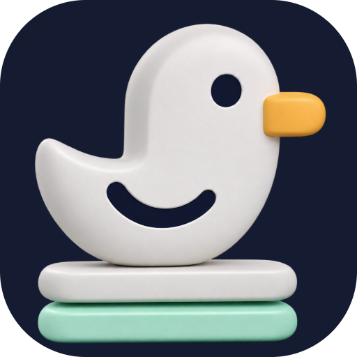
512 × 512 · Transparent
App mark; transparent corners.
Editable source1024 × 1024 · Transparent
App mark; transparent corners.
Editable source2048 × 2048 · Transparent
App mark; transparent corners.
Editable source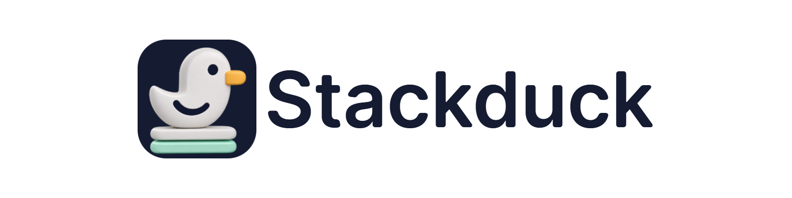
1600 × 400 · Transparent
Transparent lockup for light backgrounds.
Editable source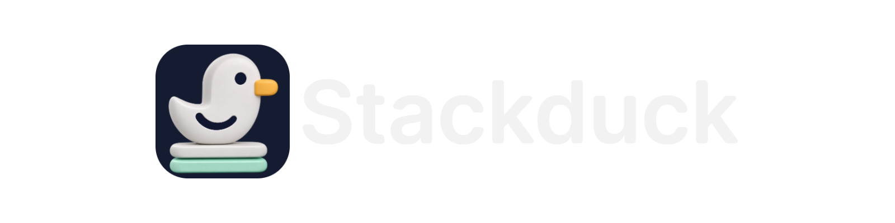
1600 × 400 · Transparent
Transparent lockup for dark backgrounds.
Editable source400 × 400 · Opaque
Profile avatar with room for circular cropping.
Editable source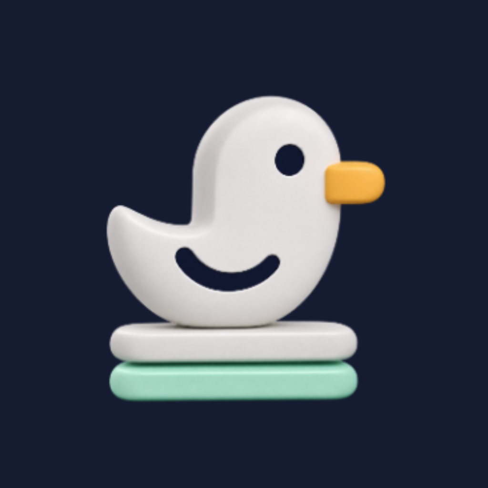
1024 × 1024 · Opaque
Profile avatar with room for circular cropping.
Editable source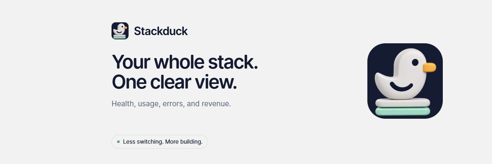
1500 × 500 · Opaque
X header; copy avoids the lower-left profile overlap.
Editable source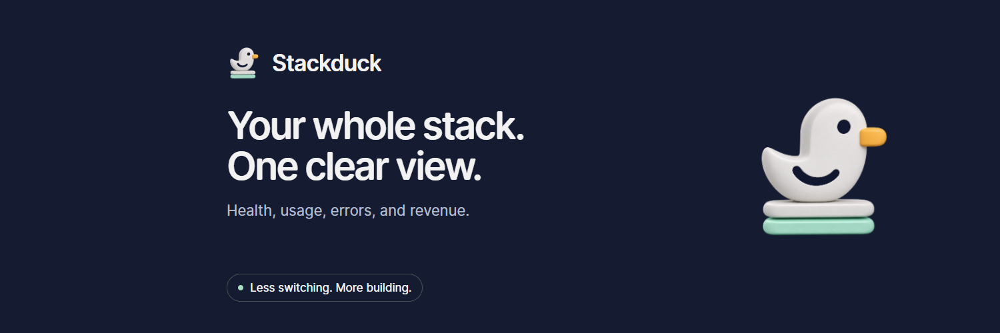
1500 × 500 · Opaque
X header; copy avoids the lower-left profile overlap.
Editable source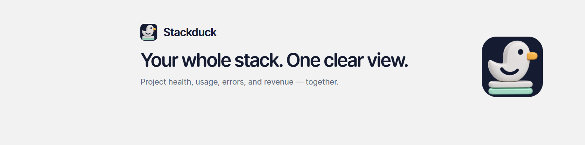
1584 × 396 · Opaque
LinkedIn personal background; 1584 x 396. Company pages use a different crop.
Editable source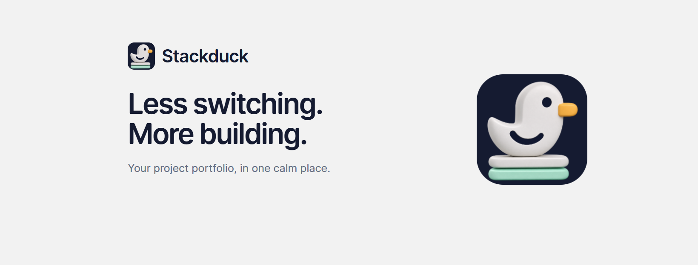
1640 × 624 · Opaque
Facebook cover canvas; preview platform cropping before applying.
Editable source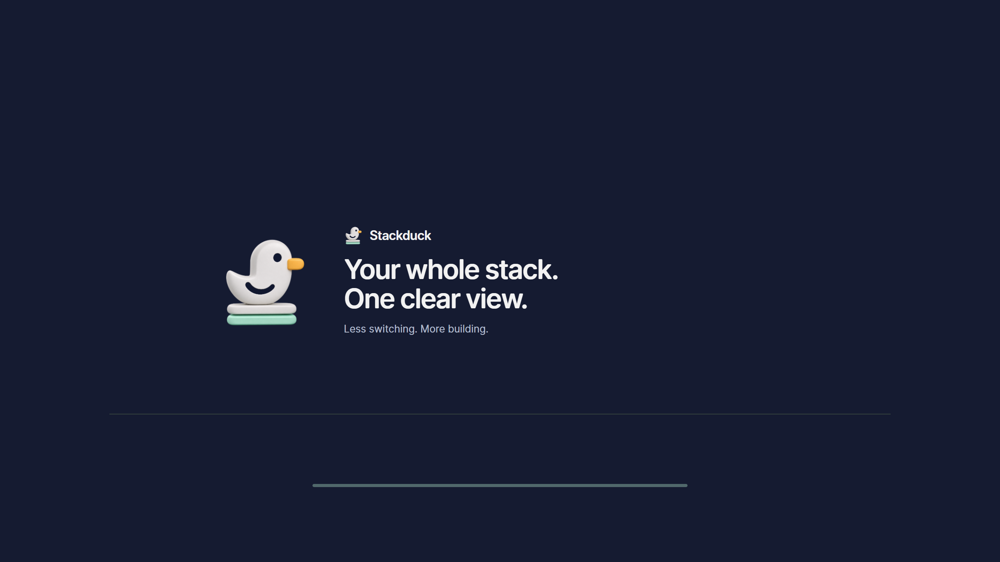
2560 × 1440 · Opaque
YouTube channel banner. Essential content stays inside the centered 1546 x 423 safe area.
Editable source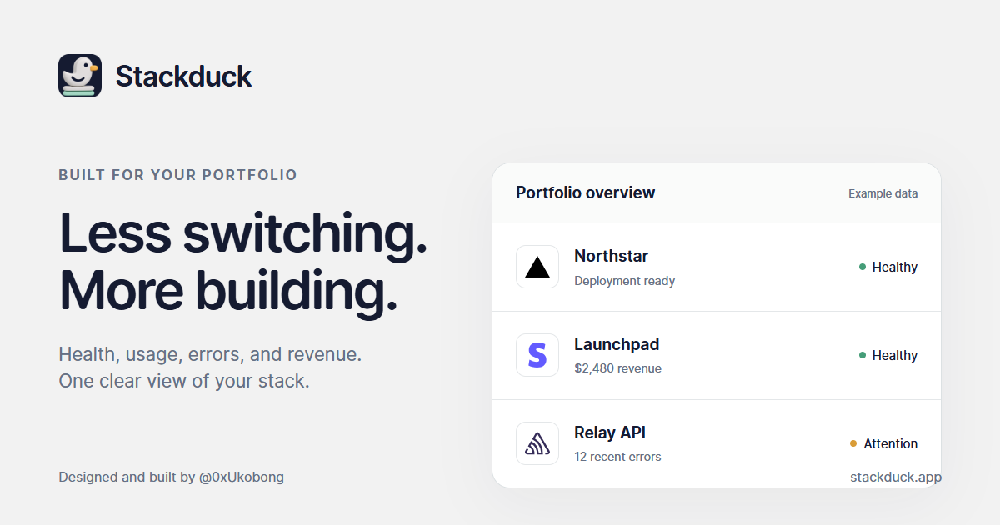
1200 × 630 · Opaque
Link preview / Open Graph; sample portfolio illustration.
Editable source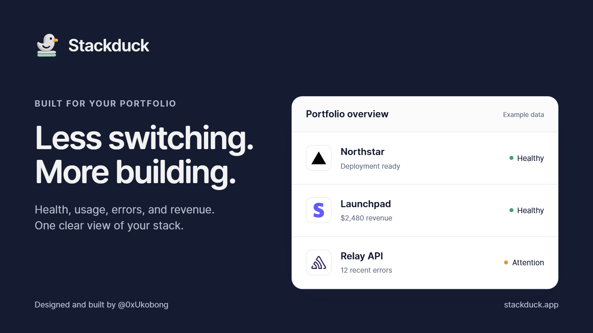
1600 × 900 · Opaque
Launch post / press artwork; sample portfolio illustration.
Editable source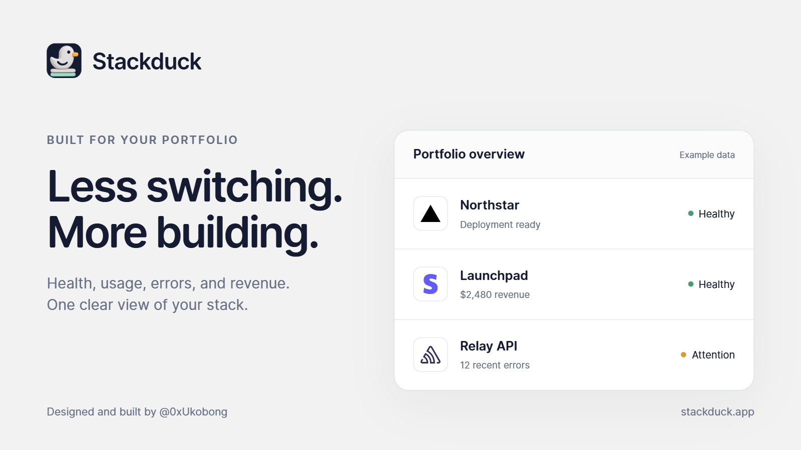
1600 × 900 · Opaque
Launch post / press artwork; sample portfolio illustration.
Editable source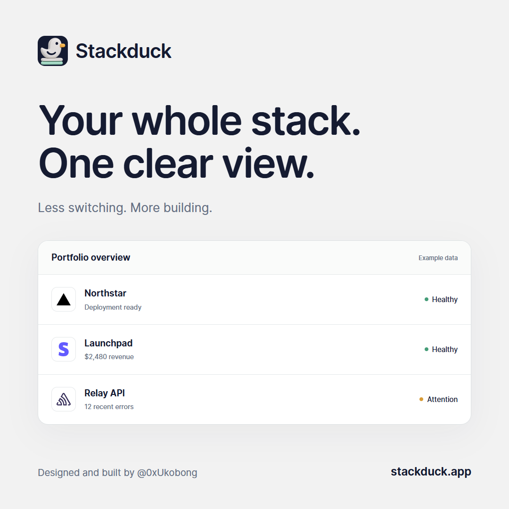
1080 × 1080 · Opaque
Square feed post for Instagram, LinkedIn, X, or community announcements.
Editable source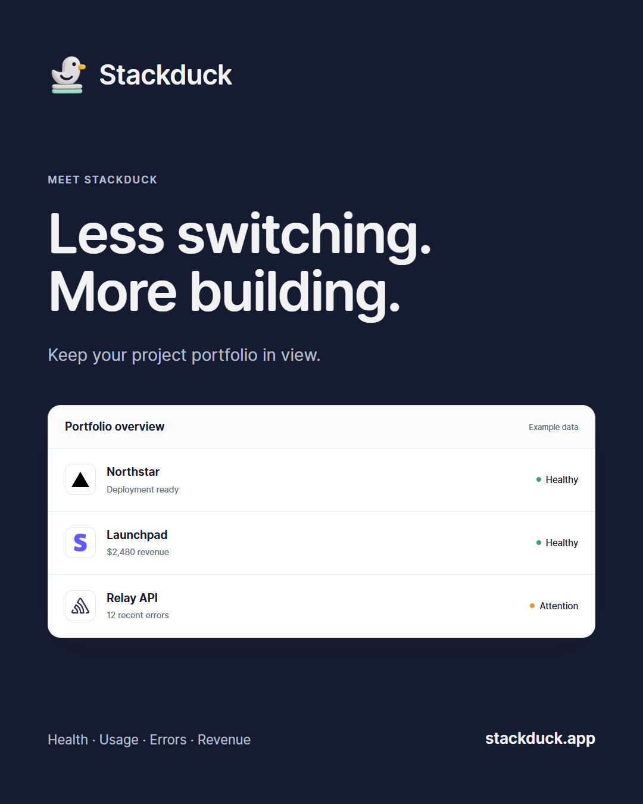
1080 × 1350 · Opaque
Portrait 4:5 feed post.
Editable source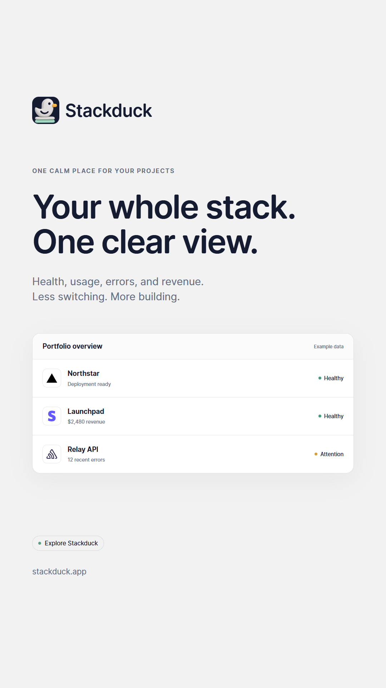
1080 × 1920 · Opaque
9:16 story / vertical promotion; key content avoids top and bottom UI bands.
Editable source